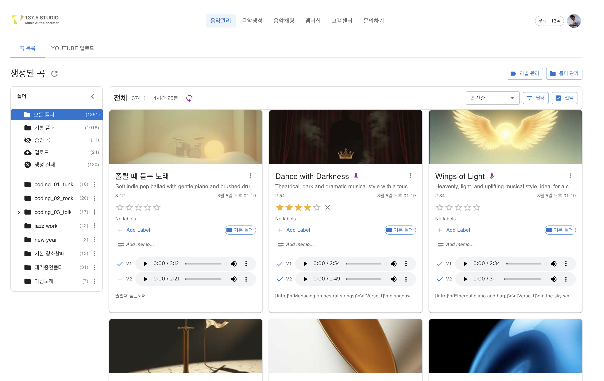
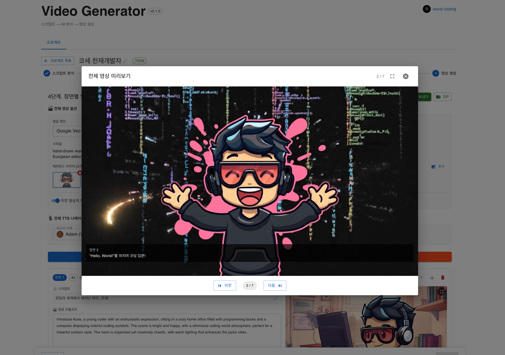
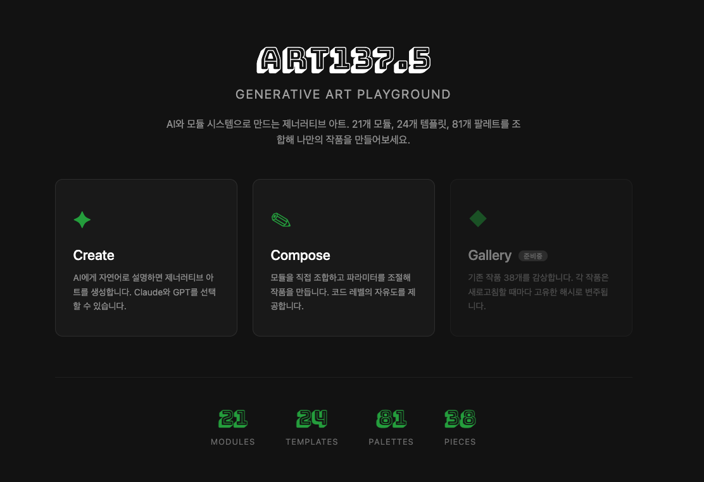

AI 음악 SaaS, 비디오 생성기, 제너레이티브 아트,
웹 3D 인터랙티브 - 모두 Claude Code로 제작
문법 학습 → 연습 → 실무 → 포기율 높음
높은 진입장벽, 긴 학습곡선
한 서비스 개발에 수개월
아이디어 → 자연어 → 즉시 결과물
AI가 코드 영역을 대체, 사람은 판단에 집중
한 서비스 개발에 3~5일
💡 2025년 기준 전 세계 AI 코딩 도구 시장
$5B+ 규모, 매년 2배 성장 중
목표, 스택, 규칙 정리 → "AI를 위한 README"
파일 생성, 의존성 설치, 빌드까지 자율 실행
결과 확인 → 피드백 → 빠른 수정 반복
Vercel / VPS / Docker → CI/CD도 AI가 셋업
$ claude
> 음악 생성 SaaS 만들어줘
CLAUDE.md를 읽고 있습니다...
✓ package.json 생성
✓ src/ 디렉토리 구조 생성
✓ 의존성 설치 완료
✓ 개발 서버 시작
> 결제 시스템 추가해줘
Toss Payments 연동 중...
🔑 CLAUDE.md가 잘 정리되면 AI가 일관된 코드를 생성
2025년 주요 AI 코딩 도구 현황
| 도구 | 타입 | 특징 | 강점 | 한계 |
|---|---|---|---|---|
| GitHub Copilot | IDE 플러그인 | VS Code / JetBrains 통합 | 자동완성, 가장 큰 사용자 기반 | 대규모 리팩토링 한계 |
| Cursor | IDE (포크) | AI 네이티브 IDE | 멀티파일 편집, Composer 모드 | VS Code 종속, 자율 실행 제한 |
| Claude Code ★ | CLI 에이전트 | 터미널 기반 자율 에이전트 | 200K 컨텍스트, 자율 실행, MCP | 터미널 기반 (GUI 없음) |
| Windsurf | IDE | Flow 기반 자동화 | 직관적 UX, 빠른 응답 | 상대적으로 신생, 생태계 작음 |
| Gemini CLI | CLI | Google AI 기반 | 무료, 1M 컨텍스트 | 코드 품질 편차, 도구 생태계 부족 |
💡 이 발표의 모든 프로젝트는 Claude Code로 제작 → CLI 기반이지만 자율적 파일 탐색 + 멀티파일 동시 편집 + MCP 확장이 강력
10월말부터 사용 중인 CLI 기반 AI 코딩 어시스턴트
$ claude
╭──────────────────────────────╮
│ Claude Code v1.0 │
╰──────────────────────────────╯
> 음악 생성 서비스 만들어줘
프로젝트 구조를 분석하고
코드를 작성합니다...
프로젝트 루트에 배치하는 "AI를 위한 README"
기술 스택, 코딩 규칙, 파일 구조, 주의사항 정의
→ AI가 프로젝트 맥락을 이해하고 일관된 코드 생성
외부 도구와 AI를 연결하는 표준 프로토콜
GitHub, Slack, DB, 브라우저 등 자유 연동
동시에 여러 프로젝트 진행 가능
AI 음악 자동 생성 & 관리 플랫폼
클릭 한번으로 음악 200곡 배치 생성
곡마다 다른 스타일/가사 자동 적용

Frontend → Backend → Queue Workers → External APIs (Suno, GPT-4, YouTube, Toss)
자연어 대화로 음악 생성 → AI가 함수를 자동 호출
billingKey 발급 → 월간 자동 결제
Free / Basic / Standard / Premium / Enterprise
| 타입 | 설명 | 만료 |
|---|---|---|
| FREE | 회원가입 시 지급 | 30일 |
| EVENT | 프로모션 / 이벤트 | 이벤트별 |
| PLAN | 구독 플랜 월간 지급 | 월간 |
| PURCHASED | 개별 구매 | 없음 |
크레딧 소진 우선순위: FREE → EVENT → PLAN → PURCHASED
~1,000줄 시스템 프롬프트
음악 전문가 역할 + BPM 레퍼런스
보컬/악기 감지 + 보안 규칙
크레딧 확인 → BullMQ 큐 등록 → Suno API 호출 → 웹훅 콜백 → S3 업로드 → 결과 제공
멀티엔진 AI 비디오 생성 도구
스크립트 → 장면 분석 → 자동 비디오 생성
멀티 AI 엔진으로 최적의 결과물

| 엔진 | 기능 | 특징 |
|---|---|---|
| Vidu | text2video, img2video | 빠른 생성 |
| Veo 2.0 | 고품질 비디오 | 안정적 |
| Veo 3.1 | 최신 비디오 | 최고 품질 |
| Imagen | 이미지 생성 | 레퍼런스용 |
동일 인터페이스로 LLM 교체 가능 → 비용/품질 최적화
React → Express → LLM(Claude/OpenAI) + Vidu/Veo/Imagen + Supertone TTS → FFmpeg Export
Google Veo (백엔드 폴링) vs Vidu (프론트 폴링) vs Imagen (동기 즉시 반환) — 엔진마다 다른 요청/응답 패턴
Claude/OpenAI → 장르, 톤, 레퍼런스 자동 추출 → 장면별 프롬프트 생성 (JSON 구조화)
이미지 업로드 → Claude Vision이 스타일 분석 → 일관된 비주얼 프롬프트 생성
Imagen 엔진으로 장면별 이미지 생성 → 사용자 선택/수정 → img2video 입력용
Vidu/Veo로 영상 생성 → TTS 나레이션 동기화 → FFmpeg concat → SRT 자막 번인 → ZIP 패키징
AI 기반 제너레이티브 아트 플레이그라운드
철학: "80% 템플릿 + 20% 커스텀 코드"
Creative Vibe Coding - LLM 기반 대화로 자유로운 창작활동
자연어 설명 → Claude AI → 최적 템플릿 + 파라미터(JSON) → Canvas 렌더링

Canvas 2D - 대부분의 작품 (직접 제어)
p5.js - 복잡한 애니메이션 작품
각 아트피스에 visual_tags / mood_tags AI 자동 매칭
38개 아트피스 중 대표작 — 자연어 설명만으로 생성
perlin noise 기반
유체 흐름 시각화
보로노이 다이어그램
컬러 하모니
재귀 프랙탈 나무
계절 변화
튜링 패턴
유기적 텍스처
프로토스 BGM + 음성 효과
공간 오디오 (Positional Audio)
Mugic
4일
Video Gen
5일
Art 137.5
3일
버거킹 3D
3일
질럿
3일
운세
3일
AI가 코드를 쓰는 시대, 개발자의 역할은
아키텍처 설계, 비즈니스 판단, 사용자 경험에 집중